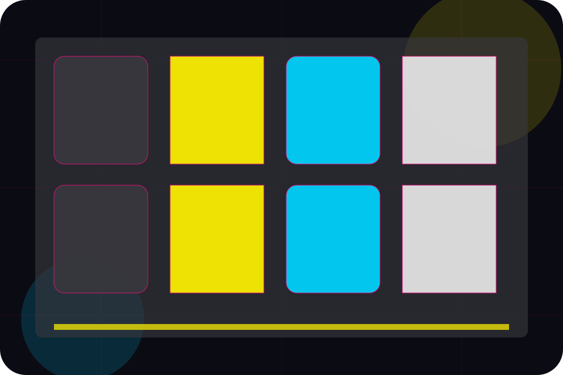
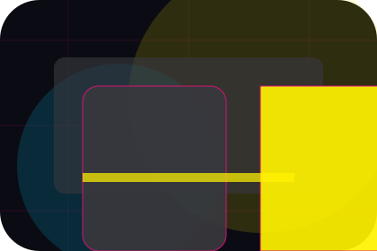
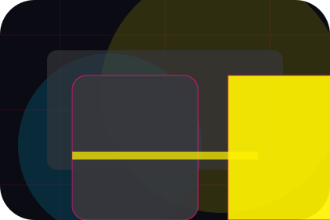
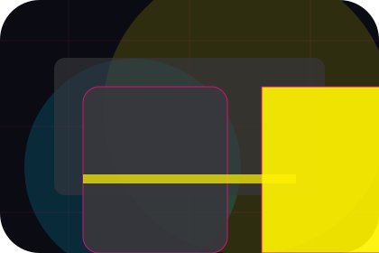
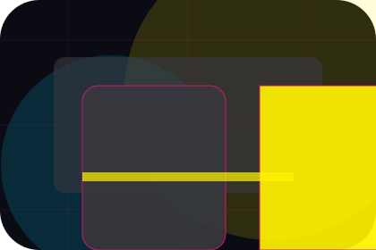
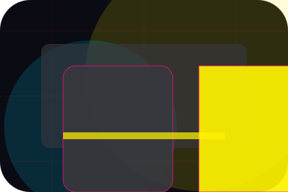
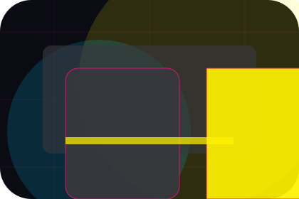
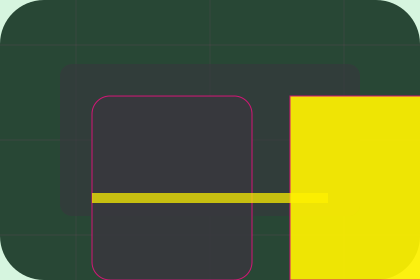

Advertise / 01
Advertise by Wave
Advertise shaped for media, broadcasting & digital content decisions.
Advertise opens as a clear media decision hub: what Wave offers, who it helps, why it matters, and which route to take first.
The first screen combines positioning, proof, primary action, and fast internal navigation, so people can act immediately or compare the rest of the advertise route with context.
Media scopeCompare optionsRequest advice
Angular media hero
Filter the schedule
Select the closest route and Wave keeps the next step, proof, and follow-up expectation aligned with audience reach and timing.

Advertise / 02
Audience
Audience adds professional context to the advertise route, using the neon editorial news grid structure to support audience reach and timing before visitors choose a next step.
Wave uses angled story cards and focused copy to make the decision easier to scan, aligning the section with audience reach and timing rather than filling space.
Explore Advertise
Context
Audience gives the page a specific angle instead of repeating the navigation label.

Judgment
The angled story cards show what to compare, what to avoid, and what matters most for media, broadcasting & digital content visitors.

Direction
The final cue points to a useful internal route so the section keeps the journey moving.
Advertise / 03
Formats
Formats makes the contact path concrete: what to send, how the response works, and what Wave needs before visitors advertise with the team.
The section reduces contact friction by naming the channel, expected detail, privacy path, and response expectation instead of dropping visitors into a generic form.
Explore AdvertiseDetails
What information helps Wave respond with a useful answer instead of a generic reply.
Timing
How the visitor should think about response, urgency, location, or availability.

Reply
The expected next message keeps scope, timing, and the first practical step clear.
Advertise / 04
Packages
Packages makes commercial comparison easier by showing fit, scope, and terms before media visitors ask for the next step.
The layout keeps price-sensitive decisions honest: it separates starting scope, fuller delivery, and ongoing support so the visitor can ask a sharper question.
View PricingFit
Who the offer is for, which scope it suits, and when a different route may be better.
Scope
What is included clearly enough for media, broadcasting & digital content visitors to compare value without hidden jargon.

Terms
The practical details that should be confirmed before someone asks to advertise with the team.
Start
Who the offer is for, which scope it suits, and when a different route may be better.
ScopedGrow
What is included clearly enough for media, broadcasting & digital content visitors to compare value without hidden jargon.
QuotedScale
The practical details that should be confirmed before someone asks to advertise with the team.
RetainerAdvertise / 05
Metrics
Metrics shows what changes after the work: clearer decisions, visible progress, and proof points that connect the offer to real outcomes.
The layout connects before-and-after thinking with measured outcomes, making the result easy to scan without promising what the business cannot guarantee.
Explore AdvertiseBefore
The uncertainty, delay, or missed opportunity visitors bring into metrics.
After
The clearer, safer, or more valuable state Wave is designed to support.

Proof
The visible cue that connects metrics to a believable decision, not a loose claim.
Advertise / 06
Campaigns
Campaigns adds professional context to the advertise route, using the neon editorial news grid structure to support audience reach and timing before visitors choose a next step.
Wave uses angled story cards and focused copy to make the decision easier to scan, aligning the section with audience reach and timing rather than filling space.
Explore AdvertiseContext
Campaigns gives the page a specific angle instead of repeating the navigation label.
Advertise / 07
Proof
Proof shows what changes after the work: clearer decisions, visible progress, and proof points that connect the offer to real outcomes.
The layout connects before-and-after thinking with measured outcomes, making the result easy to scan without promising what the business cannot guarantee.
Explore AdvertiseThe uncertainty, delay, or missed opportunity visitors bring into proof.
The clearer, safer, or more valuable state Wave is designed to support.
The visible cue that connects proof to a believable decision, not a loose claim.
Advertise / 08
Kit
Kit adds professional context to the advertise route, using the neon editorial news grid structure to support audience reach and timing before visitors choose a next step.
Wave uses angled story cards and focused copy to make the decision easier to scan, aligning the section with audience reach and timing rather than filling space.
Explore Advertise- 01
Context
Kit gives the page a specific angle instead of repeating the navigation label.
- 02
Judgment
The angled story cards show what to compare, what to avoid, and what matters most for media, broadcasting & digital content visitors.
- 03
Direction
The final cue points to a useful internal route so the section keeps the journey moving.
Advertise / 09
Contact
Contact makes the contact path concrete: what to send, how the response works, and what Wave needs before visitors advertise with the team.
The section reduces contact friction by naming the channel, expected detail, privacy path, and response expectation instead of dropping visitors into a generic form.
Explore AdvertiseWave keeps contact practical: send the key details, choose the right contact route, and know what kind of reply to expect.
Advertise With UsAngular media hero
Filter the schedule
Select the closest route and Wave keeps the next step, proof, and follow-up expectation aligned with audience reach and timing.
Advertise / 10
Advertise With Us
Wave closes the advertise route with a clear action, a quick reminder of the value, and a low-friction way to advertise with the team.
Visitors who are ready can use the primary action. Visitors who are still comparing can scan the section links, proof, and support routes before they advertise with the team.
Advertise With UsThe final block keeps the choice simple: act now, compare one more proof route, or send enough detail for a focused response.
Advertise With Usaudience reach and timing
Advertise With Us
A media site with bold editorial grid, neon category strips, episode cards, and advertiser download routes. Advertise ends with a direct path to advertise with the team, plus enough context for visitors who still need to compare.

Advertise With UsNotes
Information is provided for planning and should be reviewed for the final client, location, and operating rules.